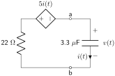
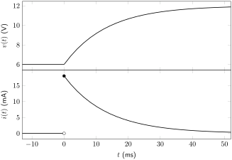
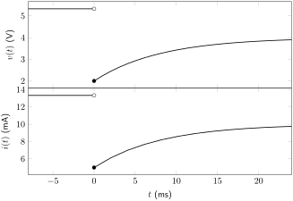

\begin{align*}
i_R(t) \amp= -i(t)\\
\frac{v(t)}{R} \amp= - C\frac{dv(t)}{d(t)}\\
\frac{v(t)}{R} + C\frac{dv(t)}{d(t)} \amp=0\\
\frac{dv(t)}{dt} + \frac{1}{RC}v(t) \amp= 0
\end{align*}
Section 5.7 Resistor-Capacitor (RC) Circuits
Resistor-capacitor (RC) circuits are circuits that contain one capacitor (or combinations of capacitors that can be reduced down to one equivalent capacitance) as well as at least one resistive element. In this chapter, the analysis of these circuits will be performed when DC conditions are changed suddenly to another set of DC conditions. For example: a capacitor will have been subjected to a constant initial voltage for a long period of time, and then suddenly disconnected from a circuit. Or: a capacitor will have been discharged for a long period of time before suddenly being connected to a circuit with a DC voltage. This short-term change in voltage and current is known as a transient analysis.
Resistors by themselves are incapable of having a transient change. This is because they do not store energy. Because a capacitor stores energy, it is able to experience a transient change in response to changing voltage or current conditions of the circuit.
On the other hand, a steady-state analysis considers the operation of a circuit when conditions remain steady for a long period of time. In this chapter, the steady-state analysis will only include DC sources. To analyze the behavior of a capacitor in a DC steady-state condition, recall from Section 5.3:
Based on (5.3.1), if the voltage remains unchanging through time, there will be no current flowing through the branch that contains a capacitor. Therefore, in DC conditions, a capacitor can be replaced by an open circuit.
An important property of capacitors that will aid in the analysis of the transient response is that the voltage over a capacitor cannot change instantaneously. That is: \(v_C(0^-)=v_C(0^+)\text{.}\) In an ideal analysis (which is what this book will use) where capacitors have no parasitic effects (stray inductance, for example), the current through a capacitor can change instantaneously and therefore be discontinuous in time.
The procedure for analyzing the transient response of an RC circuit includes the following steps.
-
Calculate the initial voltage drop (\(v(0)\)) over the circuit element by analyzing the circuit in its initial steady-state condition. (If necessary, calculate at time \(t=0^-\) and at time \(t=0^+\text{.}\))
-
Calculate the final voltage drop (\(v(\infty)\)) over the circuit element by analyzing the circuit in its final steady-state condition.
-
If there are no dependent sources: At time \(t=0^+\text{,}\) disconnect all independent sources and calculate the equivalent resistance seen by the capacitor. Use this value to calculate the time constant of the circuit.
-
If there are dependent sources or op-amps in the circuit: Either calculate the Thévenin equivalent circuit and use the Thévenin equivalent resistance as the equivalent resistance as seen by the capacitor or derive the differential equation for the circuit and use (5.6.2) to calculate the time constant of the circuit.
-
Plug the above values into the equation for \(v(t)\text{.}\)
-
Use the equation relating voltage and current for the circuit element of interest to derive an equation for \(i(t)\text{.}\)
All RC circuits can be analyzed in this method to derive a transient response. Before considering circuits of this type in Subsection 5.7.3, we will first look at two special conditions of the transient response: the homogeneous transient response (i.e. \(v(\infty) = 0\)) and the charging from zero transient response (i.e. \(v(0) = 0\)).
Subsection 5.7.1 Discharging to Zero (Homogeneous) Transient Response
The discharging to zero response is a special case of the transient response that specifically looks at what happens when a capacitor is initially connected to one or more sources that are suddenly removed from a circuit at a particular time. In other words: the capacitor, after being disconnected from the power supply, discharges its stored energy through the resistive element(s) of the circuit. The circuit diagram shown in Figure 5.7.1 will be used to analyze this discharging response. The switch is in position a for a long time before suddenly moving to position b at time \(t=0\text{.}\)
![Circuit with two meshes and four nodes consisting of a voltage source Vin, capacitor C, resistor R, and SPDT switch. The high-potential end of Vin is connected to one output of the SPDT switch at node a. The resistor connects to the other output of the SPDT switch at node b. The input of the SPDT switch connects to the capacitor at node c. The low-potential end of Vin, the capacitor, and the resistor all connect to ground at node d. Branch current iR(t) is defined through the resistor from node b to node d. Branch current i(t) is defined through the capacitor from node c to node d. Voltage drop v(t) is defined over the capacitor from node c to node d. The SPDT switch is depicted as moving from position a to position b.](generated/latex-image/ch5-homogeneousrccircuitfigure.svg)
The differential equation for the circuit will be derived at the instant the switch changes position at \(t = 0^+\text{.}\) The circuit diagram in this condition is shown in Figure 5.7.2.
![Circuit with two meshes and four nodes consisting of a voltage source Vin, capacitor C, resistor R, and SPDT switch. The high-potential end of Vin is connected to one output of the SPDT switch at node a. The resistor connects to the other output of the SPDT switch at node b. The input of the SPDT switch connects to the capacitor at node c. The low-potential end of Vin, the capacitor, and the resistor all connect to ground at node d. Branch current iR(t) is defined through the resistor from node b to node d. Branch current i(t) is defined through the capacitor from node c to node d. Voltage drop v(t) is defined over the capacitor from node c to node d. The SPDT switch is in position b.](generated/latex-image/ch5-homogeneousrcatzeroplus.svg)
Kirchhoff’s laws can be used to derive the differential equation describing this circuit. The capacitor and resistor are in series with each other. Therefore, the current through both elements must be equal. Because the direction of \(i_R(t)\) opposes the direction of \(i(t)\text{,}\) a negative sign is used in this relationship, defined in (5.7.1).
\begin{equation}
i_R(t) = -i(t)\tag{5.7.1}
\end{equation}
The voltage-current relationship in a capacitor, (5.3.1), can be used to define the current through the capacitor.
Ohm’s law can be used to relate the current through the resistor and the voltage dropped over the resistor. Because the resistor and capacitor are in parallel, both share an equivalent voltage drop of \(v(t)\text{.}\) This relationship is defined in (5.7.2).
\begin{equation}
i_R(t) = \frac{v(t)}{R}\tag{5.7.2}
\end{equation}
Plug (5.3.1) and (5.7.2) into (5.7.1) and put the equation into standard form as described in Subsection 5.6.2. This differential equation is given in (5.7.3). The derivation is shown in Derivation 5.7.1.1.
\begin{equation}
\frac{dv(t)}{dt} + \frac{1}{RC}v(t) = 0\tag{5.7.3}
\end{equation}
Derivation.
As expected, this is a homogeneous, first-order, linear, ordinary differential equation. The solution to this differential equation will not be derived in this book but is given in (5.7.4).
\begin{equation}
v(t) = v(0^+) \textrm{e}^{-\frac{t}{\tau}}u(t) + v(0^-)u(-t)\tag{5.7.4}
\end{equation}
The quantity \(\tau\) is the time constant of the circuit. It defines how quickly the voltage and current change at any point in the circuit. Larger \(\tau\) values imply that the capacitor will take a longer time to discharge.
When comparing the homogeneous transient response given in (5.7.3) with the standard form of a differential equation shown in (5.6.2), we can find the value of \(\tau\text{,}\) given in (5.7.5), where \(R\) is the equivalent resistance as seen by the capacitor (assuming there are no dependent sources or op-amps present in the circuit). If there are dependent sources or op-amps in the circuit, the Thévenin equivalent resistance seen by the capacitor can be used to calculate this equivalent resistance. (Alternatively, the differential equation can be derived from the circuit without deriving a Thévenin equivalent circuit, and \(\tau\) can be determined by analyzing the coefficient \(a_0\) of the differential equation in standard form.)
\begin{equation}
\tau = RC\tag{5.7.5}
\end{equation}
Using (5.3.1), the transient response of current through the discharging capacitor can also be derived. This is shown in (5.7.6) and derived in Derivation 5.7.1.2.
\begin{equation}
i(t) = \frac{-v(0^+)}{R}\textrm{e}^{-\frac{t}{\tau}}u(t)\tag{5.7.6}
\end{equation}
Derivation.
\begin{align*}
i(t) \amp= C\frac{dv(t)}{dt}\\
\amp= C\frac{d}{dt}\left(v(0^+) \textrm{e}^{-\frac{t}{\tau}}u(t) + v(0^-)u(-t)\right)\\
\amp= C\frac{d}{dt}\left(v(0^+) \textrm{e}^{-\frac{t}{\tau}}u(t)\right) + C\frac{d}{dt}\left(v(0^-)u(-t)\right)\\
\amp= Cv(0^+)\frac{d}{dt}\left( \textrm{e}^{-\frac{t}{\tau}}\right)u(t) + Cv(0^-)\frac{d}{dt}\left(1\right)u(-t)\\
\amp= -\frac{Cv(0^+)}{\tau}\textrm{e}^{-\frac{t}{\tau}}u(t) + 0u(-t)\\
\amp= -\frac{Cv(0^+)}{RC}\textrm{e}^{-\frac{t}{\tau}}u(t)\\
\amp= -\frac{v(0^+)}{R}\textrm{e}^{-\frac{t}{\tau}}u(t)
\end{align*}
Example 5.7.3 Homogeneous discharging transient response.
Derive equations for \(v(t)\) and \(i(t)\) for the circuit shown below. The switch is closed for a very long time before opening at a time of 0 seconds.
![Circuit with 3 meshes and 5 nodes consisting of a 20V source, four 10k resistors (labeled A-D), 500nF capacitor, and SPST switch. The high-potential end of the 20V source connects to 10k (A) at node a. The 10k (A) resistor and one end of the SPST switch connect at node b. The other end of the SPST switch, 10k (B), capacitor, and 10k (C) connect at node c. The 10k (C) and 10k (D) connect at node d. The low-potential end of the 20V source, 10k (B), capacitor, and 10k (D) connect at node e. Voltage v(t) is defined over the capacitor from node c to node e. Branch current i(t) is defined through the capacitor from node c to node e. The SPST switch is depicted as opening.](generated/latex-image/ch5-dischargercexample1.svg)
After the switch opens, the capacitor is no longer connected to any power sources. This confirms that the circuit is homogeneous and that \(v(\infty) = 0\text{.}\)
First, calculate the initial voltage drop over the capacitor by analyzing the steady-state condition of the circuit when \(t \lt 0\text{.}\) This condition is depicted below. The capacitor can be replaced by an open and the closed switch can be replaced by a short.
The two resistors in parallel with \(v(0)\) can be reduced to their equivalent resistance. The voltage \(v(0)\) is dropped over this resistance.
Use the voltage divider rule to calculate \(v(0)\text{.}\)
\begin{align*}
v(0) \amp= 20~\textrm{V} \left(\frac{6.67~\textrm{k}\Omega}{16.67~\textrm{k}\Omega}\right)\\
\amp= 8~\textrm{V}
\end{align*}
Analyze the circuit at \(t = 0^+\) to calculate the equivalent resistance seen by the capacitor. The circuit is shown in this condition below.
![Circuit with 3 meshes and 5 nodes consisting of a 20V source, four 10k resistors (labeled A-D), 500nF capacitor, and SPST switch. The high-potential end of the 20V source connects to 10k (A) at node a. The 10k (A) resistor and one end of the SPST switch connect at node b. The other end of the SPST switch, 10k (B), capacitor, and 10k (C) connect at node c. The 10k (C) and 10k (D) connect at node d. The low-potential end of the 20V source, 10k (B), capacitor, and 10k (D) connect at node e. Voltage v(t) is defined over the capacitor from node c to node e. Branch current i(t) is defined through the capacitor from node c to node e. The SPST switch is depicted as open.](generated/latex-image/ch5-dischargercexample5.svg)
The open switch disconnects the voltage source and one of the 10 kΩ resistors from the circuit.
The two 10 kΩ resistors on the right side of the circuit diagram are in series with each other and can be reduced.
The 10 kΩ resistor is in parallel with the 20 kΩ resistor. The equivalent resistance can be calculated.
\begin{align*}
R_{EQ} \amp= \frac{(20~\textrm{k}\Omega)(10~\textrm{k}\Omega)}{20~\textrm{k}\Omega+10~\textrm{k}\Omega}\\
\amp= 6.67~\textrm{k}\Omega
\end{align*}
Use (5.7.5) to calculate the time constant of the circuit.
\begin{align*}
\tau \amp= (500~\textrm{nF})(6.67~\textrm{k}\Omega)\\
\amp= (500 \times 10^{-9}~\textrm{F})(6670~\Omega)\\
\amp= 0.003~\textrm{s}
\end{align*}
\begin{align*}
v(t) \amp= 8~\textrm{V}~\textrm{e}^{-300t}~u(t) + 8~\textrm{V}~u(-t)\\
i(t) \amp= -1.2~\textrm{mA}~\textrm{e}^{-300t}~u(t)
\end{align*}
These two signals are plotted below as functions of time.
Example 5.7.11 Homogeneous RC circuit with dependent source.
Derive equations for \(v(t)\) and \(i(t)\) for the circuit shown below. The switch is in position a for a very long time before moving to position b at a time of 0 seconds. The unit of the proportionality constant of the CCVS is V/A.
![Circuit with 2 meshes and 6 nodes consisting of a 6V source, 100ohm, 22ohm, 3.3uF, SPDT switch, and CCVS of 5i(t). The high-potential end of the 6V source connects to the 100ohm at node d. The 100ohm and output a of the SPDT switch connect at node a. Output b of the SPDT switch and the 22ohm connect at node b. The input of the SPDT switch connects to the high-potential end of the CCVS at node c. The low-potential end of the CCVS connects to the 3.3uF at node e. The low-potential end of the 6V source, 22ohm, and 2.2uF connect at node f. Voltage v(t) drops over the capacitor from node e to node f. Branch current i(t) is defined through the capacitor from node e to node f. The SPDT switch is depicted as moving from position a to position b.](generated/latex-image/ch5-dischargercexampledependent1.svg)
First, calculate the initial voltage drop over the capacitor by analyzing the steady-state condition of the circuit when \(t \lt 0\text{.}\) The capacitor can be replaced by an open, and the closed switch can be replaced by a short. The 22 Ω resistor does not contribute to the circuit in the initial steady-state condition and can be removed from the circuit diagram.
The initial current through the capacitor is equal to zero. Therefore, the dependent source contributes no voltage to the output. The initial voltage over the capacitor is therefore equal to 6 V.
To confirm that the circuit is homogeneous, analyze in the final DC steady-state condition (after the switch has been in position b for a long time).
![Circuit with 1 mesh and 5 nodes consisting of a 6V source, 100ohm, 22ohm, SPDT switch, and CCVS of 5i(infinity). The high-potential end of the 6V source connects to the 100ohm at node d. The 100ohm and output a of the SPDT switch connect at node a. Output b of the SPDT switch and the 22ohm connect at node b. The input of the SPDT switch connects to the high-potential end of the CCVS at node c. The low-potential end of the CCVS connects to node e. The low-potential end of the 6V source and 22ohm connect at node e. Voltage v(infinity) drops from node c to node e. The SPDT switch is in position b.](generated/latex-image/ch5-dischargercexampledependent4.svg)
The 6 V source is disconnected from the circuit.
No current flows through the capacitor, so the dependent source does not provide any voltage to \(v(\infty)\text{,}\) which is equal to zero. The circuit is homogeneous.
Method 1: Thévenin equivalent circuit
Analyze the circuit at \(t = 0^+\) and determine the Thévenin equivalent circuit seen by the capacitor. The switch is in position b. The 6 V source and 100 Ω resistor are disconnected from the circuit.

Use the test source method to calculate the Thévenin equivalent resistance. In the calculations below, the 22 Ω resistor will be symbolically represented as \(R\) and the proportionality constant of the CCVS will be symbolically represented as \(r_m\) while deriving information about this circuit. Numerical quantities will not be plugged in until the end of this process.
Use KVL to calculate the value of the test voltage.
\begin{equation*}
V_{TEST} = -r_mi(t) - Ri(t)
\end{equation*}
Use KCL to calculate the value of the current supplied by the test voltage source.
\begin{equation*}
I_{TEST} = -i(t)
\end{equation*}
Calculate the Thévenin equivalent resistance.
\begin{align*}
R_{TH} \amp= \frac{V_{TEST}}{I_{TEST}}\\
\amp= \frac{-r_mi(t) - Ri(t)}{-i(t)}\\
\amp= r_m + R\\
\amp= 27~\Omega
\end{align*}
Use (5.7.5) to calculate \(\tau\text{.}\)
\begin{align*}
\tau \amp= (27~\Omega)(3.3 \times 10^{-6}~\textrm{F})\\
\amp= 8.91 \times 10^{-5}~\textrm{s}
\end{align*}
Method 2: Deriving the differential equation
Analyze the circuit at \(t = 0^+\) to derive the differential equation. The switch is in position b. In the calculations below, the 22 Ω resistor will be symbolically represented as \(R\) and the proportionality constant of the CCVS will be symbolically represented as \(r_m\) while deriving information about this circuit. Numerical quantities will not be plugged in until the end of this process.
![Circuit with 2 meshes and 6 nodes consisting of a 6V source, 100ohm, 22ohm, 3.3uF, SPDT switch, and CCVS of 5i(t). The high-potential end of the 6V source connects to the 100ohm at node d. The 100ohm and output a of the SPDT switch connect at node a. Output b of the SPDT switch and the 22ohm connect at node b. The input of the SPDT switch connects to the high-potential end of the CCVS at node c. The low-potential end of the CCVS connects to the 3.3uF at node e. The low-potential end of the 6V source, 22ohm, and 2.2uF connect at node f. Voltage v(t) drops over the capacitor from node e to node f. Branch current i(t) is defined through the capacitor from node e to node f. The SPDT switch is in position b.](generated/latex-image/ch5-dischargercexampledependentdiffeq1.svg)
Use KVL to derive a value for \(v(t)\) in terms of \(i(t)\text{,}\) the resistor, and the CCVS.
\begin{equation}
v(t) = -Ri(t) - r_mi(t)\tag{5.7.7}
\end{equation}
\begin{align*}
v(t) \amp= -RC\frac{dv(t)}{dt} - r_mC\frac{dv(t)}{dt}\\
\amp= -C(R+r_m)\frac{dv(t)}{dt}\\
0 \amp= v(t) + C(R+r_m)\frac{dv(t)}{dt}\\
\amp= \frac{dv(t)}{dt} + \frac{1}{C(R+r_m)}v(t)\\
\amp= \frac{dv(t)}{dt} + 11200v(t)
\end{align*}
The time constant is equal to \(1/a_0\text{,}\) which is equal to \(C(R+r_m)\text{,}\) or \(8.91 \times 10^{-5}~\textrm{s}\text{.}\)
Solution of \(v(t)\)
\begin{equation*}
v(t) = 6~\textrm{V}~\textrm{e}^{-11200t}u(t) + 6~\textrm{V}~u(-t)
\end{equation*}
Subsection 5.7.2 Charging from Zero Transient Response
The charging from zero transient response of a circuit corresponds to how the voltage and/or current changes with respect to a sudden application of DC power to previously discharged circuit components. This is another specific case of the general RC transient response, which will be discussed in Subsection 5.7.3. This section specifically corresponds to scenarios where a fully discharged capacitor is suddenly connected to a circuit containing at least one resistive element and a power supply. The circuit diagram shown in Figure 5.7.19 will be used to analyze the charging response. The switch is in position b for a long time before suddenly moving to position a at time \(t=0\text{.}\)
![Circuit with two meshes and four nodes consisting of a voltage source Vin, capacitor C, resistor R, resistor RD, and SPDT switch. The high-potential end of Vin is connected to R at node e. R is connected to one output of the SPDT switch at node a. RD connects to the other output of the SPDT switch at node b. The input of the SPDT switch connects to the capacitor at node c. The low-potential end of Vin, the capacitor, and RD all connect to ground at node d. Branch current iR(t) is defined through RD from node b to node d. Branch current i(t) is defined through the capacitor from node c to node d. Voltage drop v(t) is defined over the capacitor from node c to node d. The SPDT switch is depicted as moving from position b to position a.](generated/latex-image/ch5-nonhomogeneousrccircuitfigure.svg)
In the initial state of the circuit, all of the energy that may have been stored in the capacitor has completely discharged through the discharging resistor (\(R_D\)) giving an initial voltage drop of 0 V.
At time \(t=0^+\text{,}\) the circuit can be analyzed to derive the differential equation defining the circuit. The circuit diagram is shown in Figure 5.7.20.
![Circuit with two meshes and four nodes consisting of a voltage source Vin, capacitor C, resistor R, resistor RD, and SPDT switch. The high-potential end of Vin is connected to R at node e. R is connected to one output of the SPDT switch at node a. RD connects to the other output of the SPDT switch at node b. The input of the SPDT switch connects to the capacitor at node c. The low-potential end of Vin, the capacitor, and RD all connect to ground at node d. Branch current iR(t) is defined through RD from node b to node d. Branch current i(t) is defined through the capacitor from node c to node d. Voltage drop v(t) is defined over the capacitor from node c to node d. The SPDT switch is in position a.](generated/latex-image/ch5-nonhomogeneousrccircuitfigureswitch.svg)
Due to KCL, the current through the resistor \(R\) is equal to the current through the capacitor. Use Ohm’s law to calculate the current through the resistor and equate it to \(i(t)\text{.}\) This is shown in (5.7.8).
\begin{equation}
i(t) = \frac{V_{IN} -v(t)}{R}\tag{5.7.8}
\end{equation}
Use (5.3.1) to calculate the current through the capacitor, and set this value equal to (5.7.8). The differential equation is shown in (5.7.9) and derived in Derivation 5.7.2.1. Note that, as expected, the circuit is not homogeneous.
\begin{equation}
\frac{dv(t)}{dt} + \frac{1}{RC}v(t) = \frac{V_{IN}}{RC}\tag{5.7.9}
\end{equation}
Derivation.
\begin{align*}
C\frac{dv(t)}{dt} \amp= \frac{V_{IN}-v(t)}{R}\\
C\frac{dv(t)}{dt} \amp= \frac{V_{IN}}{R} - \frac{v(t)}{R}\\
C\frac{dv(t)}{dt} + \frac{v(t)}{R} \amp= \frac{V_{IN}}{R}\\
\frac{dv(t)}{dt} + \frac{1}{RC}v(t) \amp= \frac{V_{IN}}{RC}
\end{align*}
The solution to this differential equation (assuming that the initial voltage drop over the capacitor is 0 V) is given in (5.7.10), where \(v(\infty)\) is the final steady-state voltage over the capacitor after it has fully charged.
\begin{equation}
v(t) = v(\infty)\left[1-\textrm{e}^{-\frac{t}{\tau}}\right]u(t)\tag{5.7.10}
\end{equation}
Similar to the homogeneous RC circuit, the time constant \(\tau\) defines how quickly (or slowly) the capacitor responds to changes in voltage. The equation for the time constant continues to be defined by (5.7.5) and is calculated in the same manner as with homogeneous RC circuits.
(5.3.1) can be used to calculate the current through the capacitor during the charging process. The result is shown in (5.7.11) and derived in Derivation 5.7.2.2.
\begin{equation}
i(t) = \frac{v(\infty)}{R}\textrm{e}^{-\frac{t}{\tau}}u(t)\tag{5.7.11}
\end{equation}
Derivation.
\begin{align*}
i(t) \amp= C\frac{dv(t)}{dt}\\
\amp= C\frac{d}{dt}\left(v(\infty)\left[1-\textrm{e}^{-\frac{t}{\tau}}\right]u(t)\right)\\
\amp= v(\infty)C\frac{d}{dt}\left(1-\textrm{e}^{-\frac{t}\tau}\right)u(t)\\
\amp= v(\infty)C\frac{d}{dt}1 -v(\infty)C\frac{d}{dt}\left(\textrm{e}^{-\frac{t}\tau}\right)u(t)\\
\amp= 0 -v(\infty)C\frac{d}{dt}\left(\textrm{e}^{-\frac{t}\tau}\right)u(t)\\
\amp= -\frac{v(\infty)C}{-\tau}\textrm{e}^{-\frac{t}\tau}u(t)\\
\amp= \frac{v(\infty)C}{RC}\textrm{e}^{-\frac{t}\tau}u(t)\\
\amp= \frac{v(\infty)}{R}\textrm{e}^{-\frac{t}\tau}u(t)
\end{align*}
Example 5.7.21 Charging transient response.
Derive equations for \(v(t)\) and \(i(t)\) for the circuit shown below. The switch is open for a very long time before closing at a time of 0 seconds.
![Circuit with 3 meshes and 5 nodes consisting of an 800uA source, 40k resistor, 10k resistor, 30k resistor, 5k resistor, 20nF capacitor, and SPST switch. The 800uA source, 40k, and SPST switch connect at node a. The 800uA source flows into node a. The other end of the SPST switch and 10k connect at node b. The 10k, 30k, and 5k connect at node c. The 5k and capacitor connect at node d. The 800uA source, 40k, 30k, and capacitor connect at node e. Voltage v(t) is defined over the capacitor from node d to node e. Branch current i(t) flows through the capacitor from node d to node e. The SPST is depicted as closing.](generated/latex-image/ch5-chargercexample1.svg)
In the initial steady-state, the capacitor is disconnected from any source and has fully discharged. Therefore, \(v(0) = 0\text{.}\)
The final steady-state conditions can be calculated. Re-draw the circuit to represent the time after the switch closes. Because the circuit is under DC conditions, the capacitor can be represented as an open. The closed switch can be replaced by a short.

The tool that will be used to solve for \(v(\infty)\) in this example is source transformation. Source transformation will enable us to calculate \(v(\infty)\) using the voltage divider rule. Transform the 800 µA source to a voltage source and re-draw the circuit diagram.
\begin{align*}
V \amp= (800~\mu\textrm{A})(40~\textrm{k}\Omega)\\
\amp= 32~\textrm{V}
\end{align*}
Note that the 5 kΩ resistor does not contribute to \(v(\infty)\) as no current flows through it in a steady-state condition. The equivalent circuit contains three resistors in series with a voltage source. Use the voltage divider rule to calculate \(v(\infty)\text{.}\)
\begin{align*}
v(\infty) \amp= 32~\textrm{V}\left(\frac{30~\textrm{k}\Omega}{30~\textrm{k}\Omega+10~\textrm{k}\Omega+40~\textrm{k}\Omega}\right)\\
\amp= 32~\textrm{V}\left(\frac{30~\textrm{k}\Omega}{80~\textrm{k}\Omega}\right)\\
\amp= 12~\textrm{V}
\end{align*}
Analyze the charging circuit. Re-draw for time \(t = 0^+\text{.}\)
![Circuit with 3 meshes and 5 nodes consisting of an 800uA source, 40k resistor, 10k resistor, 30k resistor, 5k resistor, 20nF capacitor, and SPST switch. The 800uA source, 40k, and SPST switch connect at node a. The 800uA source flows into node a. The other end of the SPST switch and 10k connect at node b. The 10k, 30k, and 5k connect at node c. The 5k and capacitor connect at node d. The 800uA source, 40k, 30k, and capacitor connect at node e. Voltage v(t) is defined over the capacitor from node d to node e. Branch current i(t) flows through the capacitor from node d to node e. The SPST is depicted as closed.](generated/latex-image/ch5-chargercexample4.svg)
Deactivate the current source to calculate the equivalent resistance seen by the capacitor.
The equivalent resistance is calculated below.
\begin{align*}
R_{EQ} \amp= (40~\textrm{k}\Omega+10~\textrm{k}\Omega)//30~\textrm{k}\Omega+5~\textrm{k}\Omega\\
\amp= 50~\textrm{k}\Omega//30~\textrm{k}\Omega+5~\textrm{k}\Omega\\
\amp= 18.75~\textrm{k}\Omega+5~\textrm{k}\Omega\\
\amp= 23.75~\textrm{k}\Omega
\end{align*}
Use (5.7.5) to calculate \(\tau\text{.}\)
\begin{align*}
\tau \amp= (20~\textrm{nF})(23.75~\textrm{k}\Omega)\\
\amp= 4.64\times10^{-4}~\textrm{s}
\end{align*}
\begin{align*}
v(t) \amp= \left[12~\textrm{V}-12~\textrm{V}~\textrm{e}^{-2105t}\right]~u(t)\\
i(t) \amp= 0.51~\textrm{mA}~\textrm{e}^{-2105t}~u(t)
\end{align*}
These two signals are plotted below as functions of time.
Subsection 5.7.3 General Transient Response
Two special cases of the RC transient response have been analyzed: the homogeneous response (\(v(\infty)=0\)) and the charging from zero response (\(v(0)=0\)). In general, the initial and final voltage drops over a capacitor can be any arbitrary values. The most general form of the equation for the transient response of an RC circuit is therefore given in (5.7.12).
\begin{equation}
v(t) = \left[v(\infty) + \left( v(0^+) - v(\infty) \right) \textrm{e}^{-\frac{t}{\tau}} \right] u(t) + v(0^-)u(-t)\tag{5.7.12}
\end{equation}
The time constant \(\tau\) defines how quickly (or slowly) the capacitor responds to changes in voltage. The equation for the time constant continues to be defined by (5.7.5) and is calculated in the same manner as with previously defined RC circuits.
Current through the capacitor can be calculated by using (5.3.1). This is shown in (5.7.13) and derived in Derivation 5.7.3.1.
\begin{equation}
i(t) = \frac{v(\infty)-v(0^+)}{R} \textrm{e}^{-\frac{t}{\tau}} u(t)\tag{5.7.13}
\end{equation}
Derivation.
\begin{align*}
i(t) \amp= C\frac{dv(t)}{dt}\\
\amp=C\frac{d}{dt}\left[\left[v(\infty) + \left( v(0^+) - v(\infty) \right) \textrm{e}^{-\frac{t}{\tau}} \right] u(t) + v(0^-)u(-t)\right]\\
\amp=C\frac{d}{dt}\left[v(\infty)u(t) + v(0^+)\textrm{e}^{-\frac{t}{\tau}}u(t) - v(\infty)\textrm{e}^{-\frac{t}{\tau}}u(t) + v(0^-)u(-t)\right]\\
\amp=C\frac{d}{dt}\left(v(\infty)\right)u(t) + C\frac{d}{dt}\left(v(0^+)\textrm{e}^{-\frac{t}{\tau}}\right)u(t) - C\frac{d}{dt}\left(v(\infty)\textrm{e}^{-\frac{t}{\tau}}\right)u(t)\\
\amp+ C\frac{d}{dt}\left(v(0^-)\right)u(-t)\\
\amp=0 + v(0^+)C\frac{d}{dt}\left(\textrm{e}^{-\frac{t}{\tau}}\right)u(t) - v(\infty)C\frac{d}{dt}\left(\textrm{e}^{-\frac{t}{\tau}}\right)u(t) + 0\\
\amp=\frac{v(0^+)C}{-\tau}\textrm{e}^{-\frac{t}{\tau}}u(t) - \frac{v(\infty)C}{-\tau}\textrm{e}^{-\frac{t}{\tau}}u(t)\\
\amp=-\frac{v(0^+)C}{RC}\textrm{e}^{-\frac{t}{\tau}}u(t) + \frac{v(\infty)C}{RC}\textrm{e}^{-\frac{t}{\tau}}u(t)\\
\amp=-\frac{v(0^+)}{R}\textrm{e}^{-\frac{t}{\tau}}u(t) + \frac{v(\infty)}{R}\textrm{e}^{-\frac{t}{\tau}}u(t)\\
\amp=\frac{v(\infty)-v(0^+)}{R} \textrm{e}^{-\frac{t}{\tau}}u(t)
\end{align*}
All of the equations in this section of the text have discussed calculating the voltage drop over a capacitor. It is also possible to derive a first-order equation to calculate voltage over or current through any arbitrary component in a circuit. It is important to note that the initial conditions may be discontinuous. This is because while the voltage dropped over a capacitor is continuous for all time, that is not necessarily true for other circuit elements such as resistors, particularly if they are not connected in parallel with a capacitor.
To calculate the transient voltage response over a circuit element with a discontinuous voltage, (5.7.12) can still be used. Analyze the circuit in the initial steady-state to calculate \(v(0^-)\text{.}\) Analyze the circuit in the final steady-state to calculate \(v(\infty)\text{.}\) Analyze the circuit at the exact moment the conditions change to calculate \(v(0^+)\text{,}\) using the voltage continuity of the capacitor to help calculate any necessary quantities.
To calculate the transient current response through a circuit element, use the appropriate relationship between voltage and current through that circuit element. (For example, Ohm’s law will be used to calculate the current through a resistor.)
Calculation of the time constant is unaffected by the choice of circuit element.
Example 5.7.28 General transient response.
Derive equations for \(v(t)\) and \(i(t)\) for the circuit shown below. The switch is open for a very long time before closing at a time of 0 seconds.
![Circuit with 3 meshes and 5 nodes consisting of a 12V source, 24V source, three 1k resistors (labeled A-C), 40uF capacitor, and SPST switch. The high-potential end of the 12V source connects to 1k (A) at node a. 1k (A), 1k (B), the capacitor, and one end of the SPST switch connect at node b. The other end of the SPST switch and 1k (C) connect at node c. 1k (C) and the high-potential end of the 24V source connect at node d. The low-potential end of both sources, 1k (B), and the capacitor connect at node e. Voltage v(t) drops over the capacitor from node b to node e. Branch current i(t) flows through the capacitor from node b to node e. The SPST switch is depicted as closing.](generated/latex-image/ch5-generalrcexample1.svg)
Analyze the initial steady-state voltage over the capacitor. The capacitor can be replaced by an open. The right-hand side of the circuit is disconnected by the open switch.
![Circuit with 2 meshes and 5 nodes consisting of a 12V source, 24V source, three 1k resistors (labeled A-C), and SPST switch. The high-potential end of the 12V source connects to 1k (A) at node a. 1k (A), 1k (B), and one end of the SPST switch connect at node b. The other end of the SPST switch and 1k (C) connect at node c. 1k (C) and the high-potential end of the 24V source connect at node d. The low-potential end of both sources and 1k (B) connect at node e. Voltage v(0) drops from node b to node e. The SPST switch is depicted as open.](generated/latex-image/ch5-generalrcexample2.svg)
Use the voltage divider rule to calculate \(v(0)\text{.}\)
\begin{align*}
v(0) \amp= 12~\textrm{V}\left(\frac{1~\textrm{k}\Omega}{1~\textrm{k}\Omega+1~\textrm{k}\Omega}\right)\\
\amp= 12~\textrm{V}\left(\frac{1~\textrm{k}\Omega}{2~\textrm{k}\Omega}\right)\\
\amp= 6~\textrm{V}
\end{align*}
Analyze the circuit in its final steady-state condition. The capacitor can be replaced by an open, and the closed switch can be replaced by a short.
![Circuit with 2 meshes and 5 nodes consisting of a 12V source, 24V source, three 1k resistors (labeled A-C), and SPST switch. The high-potential end of the 12V source connects to 1k (A) at node a. 1k (A), 1k (B), and one end of the SPST switch connect at node b. The other end of the SPST switch and 1k (C) connect at node c. 1k (C) and the high-potential end of the 24V source connect at node d. The low-potential end of both sources and 1k (B) connect at node e. Voltage v(infinity) drops from node b to node e. The SPST switch is depicted as closed.](generated/latex-image/ch5-generalrcexample3.svg)
It’s possible to use either superposition or source transformation to solve this circuit. This solution will use the superposition method. For extra practice, try with source transformation to obtain the same value for \(v(\infty)\text{.}\) In both cases, the voltage drop over the capacitor is equal to the voltage drop over the 1 kΩ resistor that’s in parallel with the capacitor.
Analyze the circuit with only the 12 V source activated.
Two of the 1 kΩ resistors are in parallel and can be combined.
Use the voltage divider rule to calculate \(v_1(\infty)\text{.}\)
\begin{align*}
v_1(\infty) \amp= 12~\textrm{V}\left(\frac{0.5~\textrm{k}\Omega}{1.5~\textrm{k}\Omega}\right)\\
\amp= 4~\textrm{V}
\end{align*}
Analyze the circuit with only the 24 V source activated.
Two of the 1 kΩ resistors are in parallel and can be combined.
Use the voltage divider rule to calculate \(v_2(\infty)\text{.}\)
\begin{align*}
v_2(\infty) \amp= 24~\textrm{V}\left(\frac{0.5~\textrm{k}\Omega}{1.5~\textrm{k}\Omega}\right)\\
\amp= 8~\textrm{V}
\end{align*}
Calculate \(v(\infty)\text{.}\)
\begin{align*}
v(\infty) \amp= v_1(\infty) + v_2(\infty)\\
\amp= 4~\textrm{V} + 8~\textrm{V}\\
\amp= 12~\textrm{V}
\end{align*}
Analyze the circuit at \(t=0^+\text{.}\) Deactivate all power sources and calculate the equivalent resistance as seen by the capacitor.
The three 1 kΩ resistors are in parallel.
\begin{align*}
R_{EQ} \amp= \frac{1~\textrm{k}\Omega}{3}\\
\amp= 333~\Omega
\end{align*}
Use (5.7.5) to calculate the time constant of the circuit.
\begin{align*}
\tau \amp= (333~\Omega)(40 \times 10^{-6}~\textrm{F})\\
\amp= 0.013~\textrm{s}
\end{align*}
\begin{align*}
v(t) \amp= \left[12~\textrm{V} - 6~\textrm{V}~\textrm{e}^{-75t} \right]~u(t) + 6~\textrm{V}~u(-t)\\
i(t) \amp= 18~\textrm{mA}~\textrm{e}^{-75t}~u(t)
\end{align*}
These two signals are plotted below as functions of time.

Example 5.7.38 General transient response measured over a resistor.
Derive equations for \(v(t)\) and \(i(t)\) for the circuit shown below. The switch is open for a very long time before closing at a time of 0 seconds. Note: because the voltage over and current through a resistor is being analyzed, the voltage current relationship relating to a resistor (Ohm’s law) is used to relate voltage and current. (5.3.1) is only valid to relate current and voltage in a capacitor.
![Circuit with 4 meshes and 4 nodes consisting of a 10mA source, 8V source, two 200ohm (labeled A-B) resistors, 400ohm resistor, 100uF capacitor, and SPST switch. The 10mA source, 200ohm (A), capacitor, and one end of the SPST switch connect at node a. The 10mA source flows into node a. The other end of the SPST switch, 400ohm, and 200ohm (B) connect at node b. The 200ohm (B) and high-potential end of the 8V source connect at node c. The 10mA source, 200ohm (A), capacitor, 400ohm, and low-potential end of the 8V source connect at node d. The 10mA source flows out of node d. Voltage v(t) drops over the 400ohm resistor from node b to node d. Branch current i(t) flows through the 400ohm resistor from node b to node d. The SPST switch is depicted as closing.](generated/latex-image/ch5-generaltransientresistorexample1.svg)
Analyze the initial conditions of the circuit. These are valid up until \(t=0^-\text{.}\)
Use the voltage divider rule to calculate the initial voltage drop over the resistor.
\begin{align*}
v(0^-) \amp= 8~\textrm{V} \left(\frac{400~\Omega}{600~\Omega}\right)\\
\amp= 5.33~\textrm{V}
\end{align*}
Ohm’s law can be used to calculate the initial current through the resistor.
\begin{align*}
i(0^-) \amp= \frac{5.33~\textrm{V}}{0.4~\textrm{k}\Omega}\\
\amp= 13.3~\textrm{mA}
\end{align*}
It is also useful to note that the initial voltage drop over the capacitor, \(v_c(t)\text{,}\) which must be continuous with time will be 2 V (10 mA times 200 Ω).
Because the voltage drop over and current through the resistor will not be continuous when the switch closes, the circuit needs to be analyzed at \(t=0^+\text{.}\) Treat the capacitor at this time as a voltage source providing 2 V to the circuit.
![Circuit with four meshes and three nodes consisting of a 10mA current source, 2V voltage source, 8V voltage source, 200ohm (A) resistor, 400ohm resistor, and 200ohm (B) resistor. The 10mA source, 200ohm (A), high-potential end of the 2V source, 400ohm, and 200ohm (B) connect at node a. The 10mA source flows into node a. The 200ohm (B) and high-potential end of the 8V source connect at node b. The 10mA source, 200ohm (A), low-potential end of both voltage sources, and 400ohm connect at node c. Voltage v(0+) drops from node a to node c. Branch current i(0+) flows through the 400ohm resistor from node a to node c.](generated/latex-image/ch5-generaltransientresistorexample3b.svg)
Because the 400 Ω resistor is now in parallel with the capacitor, \(v(0^+\)) will be equal to the initial voltage drop over the capacitor: 2 V. Ohm’s law can be used to calculate \(i(0^+)\text{,}\) which is 5 mA.
Next, the steady-state conditions of the circuit should be analyzed to calculate \(v(\infty)\) and \(i(\infty)\text{.}\) The capacitor can be replaced by an open.
![Circuit with 3 meshes and 3 nodes consisting of a 10mA source, two 200ohm resistors (A and B), 400ohm resistor, and 8V source. The 10mA source, 200ohm (A), 400ohm, and 200ohm (B) connect at node a. The 10mA source flows into node a. The 200ohm (B) and high-potential end of the 8V source connect at node b. The 10mA source, 200ohm (A), 400ohm, and low-potential end of the 8V source connect at node c. The 10mA source flows out of node c. Voltage v(infinity) drops over the 400ohm resistor from node a to node c. Branch current i(infinity) flows through the 400ohm resistor from node a to node c.](generated/latex-image/ch5-generaltransientresistorexample4.svg)
Source transformation is the simplest way to solve this circuit. (Transforming the 8 V source into a current source leads to a circuit with exclusively parallel components, making it simple to reduce.) The voltage source can be transformed into a 40 mA current source.
Combine the current sources. Combine all resistors in parallel. (Note that this does not allow us to directly calculate the current \(i(\infty)\text{,}\) but it does allow us to easily calculate the voltage \(v(\infty)\text{.}\) We can then use Ohm’s law with the 400 Ω branch to calculate current.)
Use Ohm’s law to calculate \(v(\infty)\text{.}\)
\begin{align*}
v(\infty) \amp= (50~\textrm{mA})(0.08~\textrm{k}\Omega)\\
\amp= 4~\textrm{V}
\end{align*}
Use Ohm’s law through the 400 Ω resistor branch to calculate \(i(\infty)\text{.}\)
\begin{align*}
i(\infty) \amp= \frac{v(\infty)}{0.4~\textrm{k}\Omega}\\
\amp= \frac{4~\textrm{V}}{0.4~\textrm{k}\Omega}\\
\amp= 10~\textrm{mA}
\end{align*}
Analyze the circuit at \(t = 0^+\) and deactivate all power sources to calculate the equivalent resistance as seen by the capacitor. This is to find the RC time constant \(\tau\text{.}\) The circuit is re-drawn below. (Why are we using the equivalent resistance as seen by the capacitor when measuring the time constant for a circuit analyzed over a resistor? Because the capacitor is what dictates the transient response! The time constant will be the same for all elements in that circuit.)
All of the resistors are in parallel with the capacitor. The equivalent resistance is calculated below.
\begin{align*}
R_{EQ} \amp= 0.2~\textrm{k}\Omega//0.2~\textrm{k}\Omega//0.4~\textrm{k}\Omega\\
\amp= 80~\Omega
\end{align*}
Calculate the RC time constant.
\begin{align*}
\tau \amp= (100~\mu\textrm{F})(80~\Omega)\\
\amp= 0.008~\textrm{s}
\end{align*}
The equations for \(v(t)\) and \(i(t)\) can now be derived using (5.7.12) and Ohm’s law (i.e. \(i(t) = v(t)/R\)).
\begin{align*}
v(t) \amp= \left[4~\textrm{V} - 2~\textrm{V}~\textrm{e}^{-125t}\right]~u(t) + 5.33~\textrm{V}~u(-t)\\
i(t) \amp= \left[10~\textrm{mA} - 5~\textrm{mA}~\textrm{e}^{-125t}\right]~u(t) + 13.33~\textrm{mA}~u(-t)
\end{align*}
These two signals are plotted below as functions of time.
